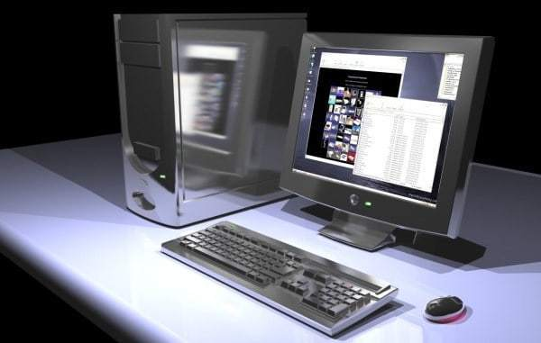
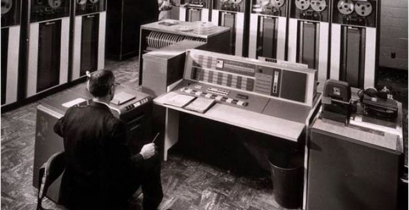
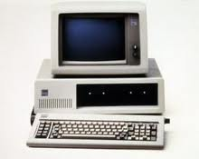
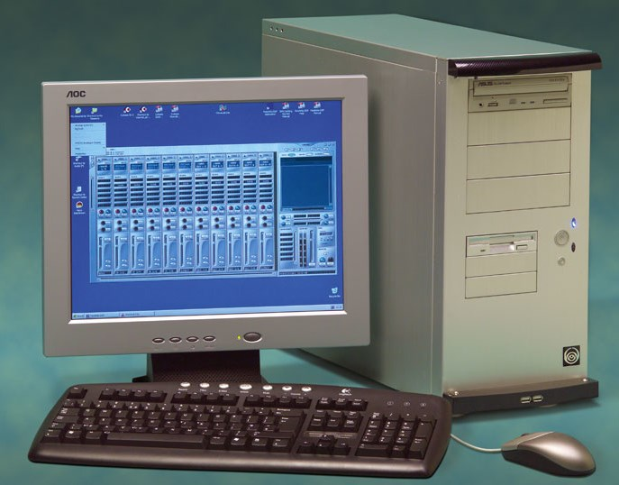
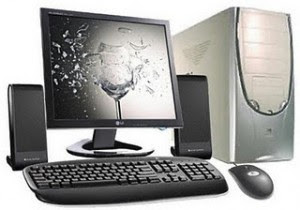

Sejarah Komputer

Komputer adalah alat yang dipakai untuk mengolah data menurut perintah yang telah diprogram. Kata komputer semula
dipergunakan untuk menggambarkan orang yang perkerjaannya melakukan perhitungan aritmetika, dengan atau tanpa alat
bantu, tetapi arti kata ini kemudian dipindahkan kepada mesin itu sendiri. Asal mulanya, pengolahan informasi hampir eksklusif berhubungan dengan
masalah aritmatika, tetapi komputer modern dipakai untuk banyak tugas yang tidak berhubungan dengan matematika.
Secara luas, Komputer dapat didefinisikan sebagai suatu peralatan elektronik yang terdiri dari beberapa komponen, yang dapat bekerja sama antara
komponen satu dengan yang lain untuk menghasilkan suatu informasi berdasarkan program dan data yang ada. Adapun komponen komputer meliputi: Layar Monitor, CPU, Keyboard,
Mouse dan Printer (sbg pelengkap). Tanpa printer komputer tetap dapat melakukan tugasnya sebagai pengolah data, namun sebatas terlihat dilayar monitor belum dalam bentuk print out (kertas).
Dalam definisi seperti itu terdapat alat seperti slide rule, jenis kalkulator mekanik mulai dari abakus dan seterusnya, sampai semua komputer elektronik yang kontemporer.
Istilah lebih baik yang cocok untuk arti luas seperti "komputer" adalah "yang memproses informasi" atau "sistem pengolah informasi."
Saat ini, komputer sudah semakin canggih. Tetapi, sebelumnya komputer tidak sekecil, secanggih, sekeren dan seringan sekarang. Terdapat 5 generasi dalam sejarah komputer.
Generasi Komputer

Generasi Pertama
Tahun 1946 ialah tahun dibuatnya komputer generasi pertama dengan menggunakan tabung vakum sebagai komponen dasar pembuatannya.
Tabung yang sebagai komponen dasar ini memang dikenal tidak efisien di beberapa aspek.
Sebab komponen tersebut cepat sekali panas ketika di pakai. Selain itu, komponen ini memerlukan daya listrik sangat besar dalam pengoperasiannya.
Electronic numerical integrator and computer (ENIAC) adalah salah satu contoh komputer generasi yang pertama.
Untuk komputer generasi pertama diciptakan oleh juga J.Presper Eckert dan John mauchly di University of Pennsylvania.
Mereka berdua membangun ENIAC dengan menggunakan 18.000 tabung vakum dengan ukuran 1800 kaki dan mempunyai berat yang mencapai sekitar 30 ton.
Sejarah komputer generasi pertama ini menjadi digital elektronik yang dipakai untuk kebutuhan paling umum.

Program ENIAC ini sudah di rancang pada tahun 1942 namun dimulai baru di tahun 1943 dan selesai pada tahun 1946 .
Bentuk program ENIAC memiliki ukuran sangat besar, pada peletakkan program ini saja memerlukan ruang seluas 500 m2.
ENIAC ini juga menggunakan 75.000 relay dan saklar, 18.000 tabung, 70.000 resistor, dan 10.000 kapasitor.
Saat memulai pengoperasian, ENIAC membutuhkan daya listrik yang sangat besar yaitu sekitar 140 kilo watt.
Untuk bahasa yang digunakan pada komputer generasi pertama ini adalah bahasa mesin. Bahasa ini menjadi bahasa pemrograman yang sangat dasar, dan bahas ini hanya di mengerti oleh komputer.
Dana yang diperlukan untuk membuat perangkat tersebut mencapai 1 juta dollar.
Namun kemampuan komputer generasi ini memang sangat terbatas, sehingga untuk dapat memecahkan masalah membutuhkan waktu yang lama..
Bahkan pengguna harus memakai kartu berlubang atau disebut punched cards, serta pita kertas untuk dapat melakukan input agar dapat melakukan output yang dihasilkan berupa print out.
Menggunakan biaya pembuatan fantastis, namun fungsinya sendiri ini belum maksimal.
Generasi Kedua

Tahun 1959 komponen untuk merancang komputer ialah teknologi transistor, tabung vakum yang berfungsi sebagai komponen dasar di komputer generasi pertama telah tergantikan dengan teknologi transistor. Komponen ini dinilai jauh lebih efisien jika dibandingkan tabung vakum.
Komputer dengan menggunakan dasar transistor mempunyai ukuran lebih kecil dibandingkan tabung vakum daya listrik yang diperlukan lebih kecil untuk pengoperasiannya. Biaya pembuatan kom
Untuk bahasa pemrogaman juga telah di kembangkan. Jika pada generasi pertama menggunakan bahasa mesin, untuk generasi kedua diganti menggunakan bahasa Assembly dan bahasa simbolik.
Dengan menggunakan bahasa pemrogaman tersebut, programmer dapat memberikan instruksi dengan kata-kata.
Dengan ukuran yang lebih kecil komputer generasi kedua ini banyak digunakan di beberapa instansi seperti universitas, perusahaan hingga pemerintahan.
Mesin yang pertama kali menggunakan teknologi ini ialah super komputer. IBM juga telah membuat super komputer dengan nama Sprery-rand dan Stretch serta menjadikan komputer dengan nama LARC. Komputer ini dikembangkan di laboratorium menggunakan energi atom, dapat mengatasi berbagai data dimana kemampuan ini diperlukan oleh peneliti atom.
Pada tahun 1965, hampir dari di berbagai bisnis besar menggunakan komputer generasi kedua untuk memproses informasi dengan keuangan bisnis.
Generasi Ketiga

Generasi Komputer ketiga dimulai pada tahun 1965, dimana pada masa itu komputer ini dibuat menggunakan Integrated Circuit (ICs).
Teknologi ini, menggeser fungsi transistor sebagai komponen dasar komputer. Namun transistor masih tetap digunakan, akan tetapi ukurannya lebih di perkecil.
Beberapa transistor yang berukuran kecil tersebut, di masukan di IC, bersama dengan resistor dan kapasitor.
Komputer generasi ketiga ini menjadi komputer pertama, yang dapat membuat operator berinteraksi menggunakan keyboard dan monitor dengan tampilan sistem operasi.
Selain itu, komputer ini menghabiskan biaya yang lebih murah, sehingga dapat di jangkau masyarakat umum.
Komputer generasi ketiga merupakan perkembangan melalui tahap yang sangat pesat dari komputer terdahulu. Komputer generasi ketiga ini muncul pada era 1964-1970.
Dalam penggunaannya, transistor membuat kinerja komputer cepat panas. Sehingga komputer generasi kedua mulai ditinggalkan.
Generasi Keempat

Komputer yang kita pakai pada saat ini merupakan komputer generasi keempat, dimana generasi keempat ini dibuat dengan menggunakan komponen dasar bernaman Microprosesor.
Chip microprosesor memiliki ribuan transistor dan beberapa macam elemen sirkuit yang mana saling terhubung menjadi satu.
Intel menjadi sebuah perusahaan yang paling berpengaruh terhadap perkembangan chip microprosesor. Karena mereka berhasil menciptakan intel 4004 yang merupakan cikal bakal perkembangan komputer.
Perusahaan dari Intel berhasil menggantikan perangkat komputer yang memiliki ukuran yang besar menjadi sangat kecil sehingga membuatnya menjadi lebih efisien.
Pada tahun 1971 IBM menciptakan komputer yang didesain khusus untuk kalangan rumahan. Sedangkan Apple mempublikasikan Macinthos pertama kali pada tahun 1984, sebuah sistem operasi untuk dapat dijalankan dari perangkat komputer.
Banyak sekali kemajuan pesat yang terjadi pada generasi ke empat ini seperti di ciptakannya mouse, graphical user interface atua GUI hingga komputer jinjing yang disebut sebagai laptop.
Procecsor atau yang di sebut CPU selalu mengalami perkembangan dari waktu ke waktu hingga sekarang.
Generasi Kelima

Pada generasi kelima ini sebenarnya masih tahap pembangunan.
Dimana generasi ini akan mempunyai teknologi yang dibuat dengan berdasarkan kecerdasan buatan (artificial intelligence).
Pengembangan komputer generasi kelima ini bertujuan untuk dapat menghasilkan perangkat komputer yang dapat merespon,
menggunakan bahasa yang digunakan manusia. Tidak cukup sampai disitu komputer generasi ini diharapkan dapat
mempelajari lingkungan di sekitarnya serta dapat menyesuaikan dirinya sendiri.